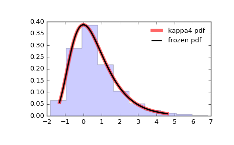

scipy.stats.kappa4¶
-
scipy.stats.kappa4= <scipy.stats._continuous_distns.kappa4_gen object>[source]¶ Kappa 4 parameter distribution.
As an instance of the
rv_continuousclass,kappa4object inherits from it a collection of generic methods (see below for the full list), and completes them with details specific for this particular distribution.Notes
The probability density function for kappa4 is:
kappa4.pdf(x, h, k) = (1.0 - k*x)**(1.0/k - 1.0)* (1.0 - h*(1.0 - k*x)**(1.0/k))**(1.0/h-1)
if
handkare not equal to 0.If
horkare zero then the pdf can be simplified:h = 0 and k != 0:
kappa4.pdf(x, h, k) = (1.0 - k*x)**(1.0/k - 1.0)* exp(-(1.0 - k*x)**(1.0/k))
h != 0 and k = 0:
kappa4.pdf(x, h, k) = exp(-x)*(1.0 - h*exp(-x))**(1.0/h - 1.0)
h = 0 and k = 0:
kappa4.pdf(x, h, k) = exp(-x)*exp(-exp(-x))
kappa4 takes
handkas shape parameters.The kappa4 distribution returns other distributions when certain
handkvalues are used.h k=0.0 k=1.0 -inf<=k<=inf -1.0 Logistic
logistic(x)
Generalized Logistic(1) 0.0 Gumbel
gumbel_r(x)
Reverse Exponential(2) Generalized Extreme Value
genextreme(x, k)
1.0 Exponential
expon(x)
Uniform
uniform(x)
Generalized Pareto
genpareto(x, -k)
- There are at least five generalized logistic distributions. Four are described here: https://en.wikipedia.org/wiki/Generalized_logistic_distribution The “fifth” one is the one kappa4 should match which currently isn’t implemented in scipy: https://en.wikipedia.org/wiki/Talk:Generalized_logistic_distribution http://www.mathwave.com/help/easyfit/html/analyses/distributions/gen_logistic.html
- This distribution is currently not in scipy.
References
J.C. Finney, “Optimization of a Skewed Logistic Distribution With Respect to the Kolmogorov-Smirnov Test”, A Dissertation Submitted to the Graduate Faculty of the Louisiana State University and Agricultural and Mechanical College, (August, 2004), http://etd.lsu.edu/docs/available/etd-05182004-144851/unrestricted/Finney_dis.pdf
J.R.M. Hosking, “The four-parameter kappa distribution”. IBM J. Res. Develop. 38 (3), 25 1-258 (1994).
B. Kumphon, A. Kaew-Man, P. Seenoi, “A Rainfall Distribution for the Lampao Site in the Chi River Basin, Thailand”, Journal of Water Resource and Protection, vol. 4, 866-869, (2012). http://file.scirp.org/pdf/JWARP20121000009_14676002.pdf
C. Winchester, “On Estimation of the Four-Parameter Kappa Distribution”, A Thesis Submitted to Dalhousie University, Halifax, Nova Scotia, (March 2000). http://www.nlc-bnc.ca/obj/s4/f2/dsk2/ftp01/MQ57336.pdf
The probability density above is defined in the “standardized” form. To shift and/or scale the distribution use the
locandscaleparameters. Specifically,kappa4.pdf(x, h, k, loc, scale)is identically equivalent tokappa4.pdf(y, h, k) / scalewithy = (x - loc) / scale.Examples
>>> from scipy.stats import kappa4 >>> import matplotlib.pyplot as plt >>> fig, ax = plt.subplots(1, 1)
Calculate a few first moments:
>>> h, k = 0.1, 0 >>> mean, var, skew, kurt = kappa4.stats(h, k, moments='mvsk')
Display the probability density function (
pdf):>>> x = np.linspace(kappa4.ppf(0.01, h, k), ... kappa4.ppf(0.99, h, k), 100) >>> ax.plot(x, kappa4.pdf(x, h, k), ... 'r-', lw=5, alpha=0.6, label='kappa4 pdf')
Alternatively, the distribution object can be called (as a function) to fix the shape, location and scale parameters. This returns a “frozen” RV object holding the given parameters fixed.
Freeze the distribution and display the frozen
pdf:>>> rv = kappa4(h, k) >>> ax.plot(x, rv.pdf(x), 'k-', lw=2, label='frozen pdf')
Check accuracy of
cdfandppf:>>> vals = kappa4.ppf([0.001, 0.5, 0.999], h, k) >>> np.allclose([0.001, 0.5, 0.999], kappa4.cdf(vals, h, k)) True
Generate random numbers:
>>> r = kappa4.rvs(h, k, size=1000)
And compare the histogram:
>>> ax.hist(r, normed=True, histtype='stepfilled', alpha=0.2) >>> ax.legend(loc='best', frameon=False) >>> plt.show()
Methods
rvs(h, k, loc=0, scale=1, size=1, random_state=None)Random variates. pdf(x, h, k, loc=0, scale=1)Probability density function. logpdf(x, h, k, loc=0, scale=1)Log of the probability density function. cdf(x, h, k, loc=0, scale=1)Cumulative distribution function. logcdf(x, h, k, loc=0, scale=1)Log of the cumulative distribution function. sf(x, h, k, loc=0, scale=1)Survival function (also defined as 1 - cdf, but sf is sometimes more accurate).logsf(x, h, k, loc=0, scale=1)Log of the survival function. ppf(q, h, k, loc=0, scale=1)Percent point function (inverse of cdf— percentiles).isf(q, h, k, loc=0, scale=1)Inverse survival function (inverse of sf).moment(n, h, k, loc=0, scale=1)Non-central moment of order n stats(h, k, loc=0, scale=1, moments='mv')Mean(‘m’), variance(‘v’), skew(‘s’), and/or kurtosis(‘k’). entropy(h, k, loc=0, scale=1)(Differential) entropy of the RV. fit(data, h, k, loc=0, scale=1)Parameter estimates for generic data. expect(func, args=(h, k), loc=0, scale=1, lb=None, ub=None, conditional=False, **kwds)Expected value of a function (of one argument) with respect to the distribution. median(h, k, loc=0, scale=1)Median of the distribution. mean(h, k, loc=0, scale=1)Mean of the distribution. var(h, k, loc=0, scale=1)Variance of the distribution. std(h, k, loc=0, scale=1)Standard deviation of the distribution. interval(alpha, h, k, loc=0, scale=1)Endpoints of the range that contains alpha percent of the distribution